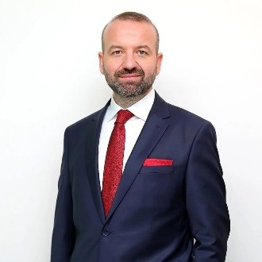

Hakkımda
Akademiden yönetim masasına, kürsüden ekrana
Akademisyen, yönetici, yazar, moderatör, TV programı yapımcısı ve keynote speaker.

Çalışma alanları
İstanbul'da doğan Prof. Dr. Ahmet Avcı; 2002'de lisans, 2005'te yüksek lisans ve 2010'da doktora eğitimini Marmara Üniversitesi'nde tamamladı. 2010 yılında Fatih Sultan Mehmet Vakıf Üniversitesi Eğitim Bilimleri Bölümü'nde akademik kariyerine başladı. Aynı yıl Sürekli Eğitim Uygulama ve Araştırma Merkezi'nin (FSMSEM) kurucu müdürlüğünü üstlendi ve merkezi 2010–2018 yılları arasında yönetti. 2014'te Kariyer, Girişimcilik ve Mesleki Test Merkezi'ni (FSMKAM), 2018'de ise tasarımında ve geliştirilmesinde aktif rol aldığı SOSYOPARK'ı kurucu müdür olarak hayata geçirdi.
2020–2023 yılları arasında Varlık Fonu bünyesindeki kurumlarda üst düzey yöneticilik yaptı. Türkiye Sigorta'da önce Eğitim, Gelişim ve Akademi Direktörlüğünü, ardından CEO Ofis Direktörlüğünü yürüttü. 2022'de Türkiye Katılım Sigorta'nın kuruluşunda aktif rol aldı; İnsan Kaynakları, Finans, Bilgi Teknolojileri, Kurumsal İletişim ve Tedarik birimlerini Genel Müdür Yardımcısı olarak yönetti.
Ulusal ve uluslararası birçok araştırma ve projede proje başkanı, yürütücü, tasarımcı ve koordinatör olarak görev aldı. Araştırma, eğitim ve danışmanlık şirketlerinde eğitim koordinatörü, proje direktörü ve genel müdür olarak çalıştı; birçok firmaya yönetim danışmanlığı verdi. Pek çok radyo ve televizyon programına konuk oldu; eğitim, kültür ve yönetim konularını ele aldığı “Artılar ve Eksiler” programını hazırlayıp sundu.
“Dijital Liderlik ve Proaktif İş Davranışı, Bireysel Özümseme Kapasitesi ve Katılımcı İnsan Kaynaklarının Rolü” başlıklı ikinci doktorasıyla, kurumların teknoloji, insan kaynakları ve kurumsal başarı bağlamında yararlanabileceği bir rehber ortaya koydu. Sekiz kitabı ve ulusal ve uluslararası hakemli dergilerde 30'un üzerinde makalesi bulunuyor.
2024'ten bu yana İstanbul Sabahattin Zaim Üniversitesi'nde öğretim üyesi olarak görev yapıyor; Sürekli Eğitim Uygulama ve Araştırma Merkezi (İZÜSEM) ile Öğretim ve Öğrenmeyi Geliştirme Uygulama ve Araştırma Merkezi'nin (ÖGEM) yönetim kurullarında yer alıyor. Birçok sivil toplum kuruluşunda çalışıyor ve sosyal sorumluluk projelerine destek veriyor.
Kariyer
Zaman çizelgesi
- 2024–Öğretim Üyesi, İstanbul Sabahattin Zaim Üniversitesi. İZÜSEM ve ÖGEM yönetim kurulu üyesi
- 2022Genel Müdür Yardımcısı, Türkiye Katılım Sigorta (kuruluş ekibi): İnsan Kaynakları, Finans, Bilgi Teknolojileri, Kurumsal İletişim ve Tedarik
- 2020–2023Türkiye Sigorta: Eğitim, Gelişim ve Akademi Direktörü, ardından CEO Ofis Direktörü
- İkinci doktora: Dijital Liderlik ve Proaktif İş Davranışı, Bireysel Özümseme Kapasitesi ve Katılımcı İnsan Kaynaklarının Rolü
- 2018Kurucu Müdür ve Yönetim Kurulu Başkanı, Sosyal İş Birlikleri Bölgesi Uygulama ve Araştırma Merkezi (SOSYOPARK)
- 2014–2016Kurucu Müdür, Kariyer, Girişimcilik ve Mesleki Test Merkezi (FSMKAM)
- 2010–2018Kurucu Müdür ve Yönetim Kurulu Başkanı, Sürekli Eğitim Uygulama ve Araştırma Merkezi (FSMSEM)
- 2010Eğitim Bilimleri Bölümü öğretim üyesi, Fatih Sultan Mehmet Vakıf Üniversitesi
- 2002–2010Lisans (2002), yüksek lisans (2005) ve doktora (2010), Marmara Üniversitesi
Fotoğraflar